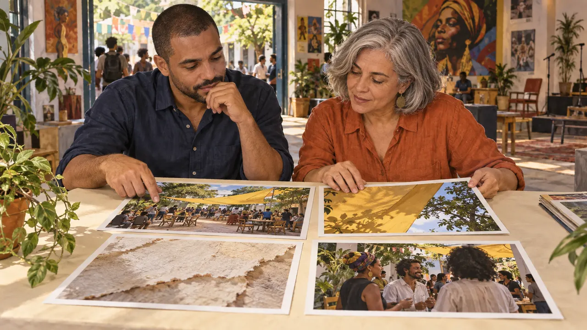

Imagem com IA · v6.2 · curso gratuito
Treine seu olhar
Transforme gosto em decisões de luz, cor e composição. Compare opções e revise uma peça com uma justificativa que você consegue mostrar.
começar agora →4 módulos · 12 aulas de ~15 minutos · leitura no celular ou computador

O que você sai fazendo
Descrever o que vêSepare observação, interpretação e decisão.
Comparar estéticasEscolha uma direção pelo objetivo da peça.
Revisar com evidênciaProduza estudos próprios e explique uma melhoria.
Como estudar
Leia uma aula e reserve dez minutos para a prática. O progresso fica neste navegador. Faça cópias pela opção de exportar na jornada.
As imagens são ilustrações geradas no Codex. As práticas usam fotos próprias, papel ou desenhos. Geração de imagens é opcional; não é necessário contratar uma ferramenta.
Para quem é
É para você se
- Cria imagens, eventos ou comunicação e quer justificar suas escolhas visuais.
- Usa fotos no celular e tem pouco tempo por sessão.
- Prefere aprender fazendo.
Não é para você se
- Já domina o assunto e busca algo técnico.
- Quer videoaula tradicional.